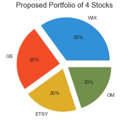

Exchange Traded Fund Visualization Tool
Through interactive vizualizations, this website offers reatil and institutional investors a tool to discover ETFs that meet their particular return/risk preferences and requirements. To be in the position to make informed investment decisions, this tool serves as a guidepost in creating an optimized portfolio by allowing users to map universes of ETFs, analyze a portfolio's performance, diversification via node diagrams and a proprietary score, create pro forma portfolios, and explore Morningstar ratings and fees.
05/2023

Technologies: Python, Altair, D3, Tableau, Flask App, Bloomberg API
An Algorithmic Approach to Predicting Flight Delays
11/2022
With datasets provided by the US DoT and the NOAA, this machine learning projects experiments with different machine learning models including, logistic regression, 5-cross fold validation with custom features, Page Rank and decision trees to predict flight delays.

Technologies: Python, PySpark, Azure Databricks
Scaling Company Revenues, Margin Profiles, & Take Rates Through Data Science
07/2022

We study and create a vision to optimize delivery and pickup capabilities for a company in the Bay area to better serve their customers today while also positioning the company for long-term growth and success. Using a variety of a technologies, we show a way to increase revenues, margin profiles, and take rates through data science.
Technologies: Google Cloud, SQL, Neo4j, MongoDB, Redis
The Most Predictive Fundamentals in an Inflationary Environment
03/2022
We explore how do fundamental metrics identified by Warren Buffet such as Net Debt to EBITDA, Free Cash Flow Yield, and Return on Invested Capital relate to the total return of underlying S&P 500 constituents in inflationary environments with a variety of control factors.
Technologies: Python, Rstudio
A Winning Four Stock Portfolio
I explore a combination of fundamental and technical data related to four stocks including Wix, GM, Etsy, and The Walt Disney Company. In addition, I show why as a portfolio the four stocks together would provide a diversification benefit as a portfolio. Finally, I build a recurrent a Long Short-Term Memory recurrent neural network machine learning model to predict the next day's closing price of Disney, using a 100-day lookback.
07/2019